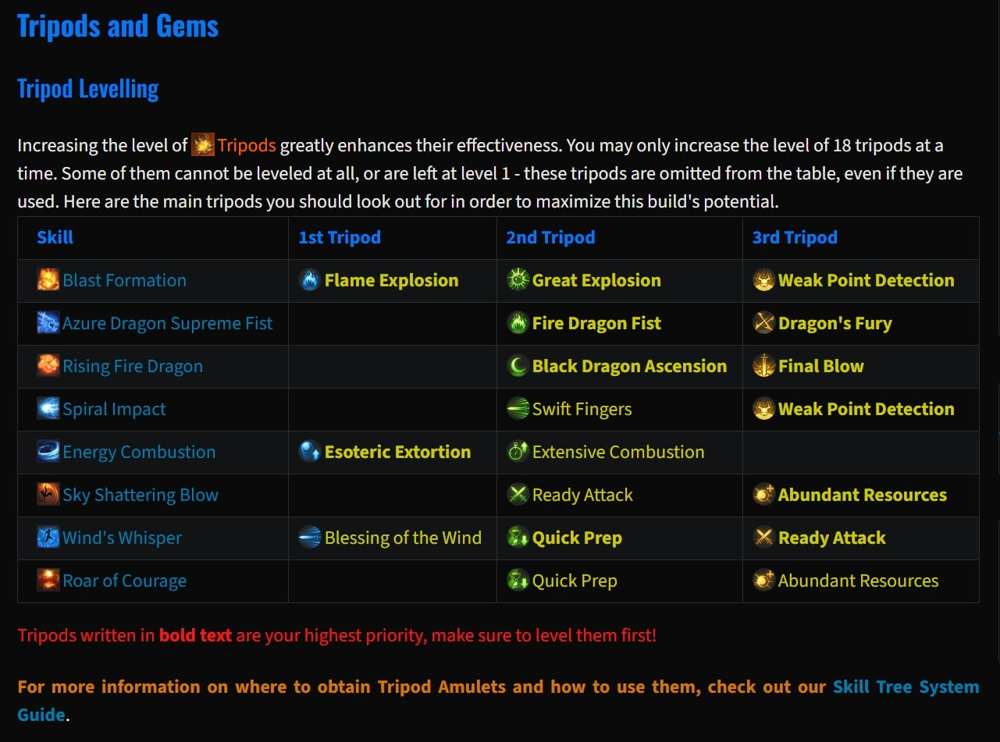

Analyzing Maxroll’s Wardancer Guide
February 12, 2025

Introduction
My project will be guiding potential Lost Ark players to a character class called Wardancer under Martial Artist (Female). I have analyzed Maxroll’s Wardancer Guide as a reference since it is one of the most popular sites for Lost Ark content. By referencing this website, I can learn from its strengths and weaknesses to improve the quality of my own blog.
Strengths of Maxroll’s Guide
- Detailed Content
- Skills
- Engravings
- Playstyle
- Format
- Bullet points
- Headers
- Sidebar navigation
- Icons - Uses helpful visual indicators for clarity.
Weaknesses of Maxroll’s Guide
- Text Blocks
- Can be hard to read due to dense text.
- Visuals
- Limited images compared to the amount of text.
- Lack of Personal Insights
- As a general guide, it does not include personal opinions or experiences.
Improvements in My Blog
- More Visuals - I will use larger images for better clarity.
- Step-by-Step Sections - Breaking down information for easy understanding.
- Personal Insights - Adding my own experience and playstyle recommendations.
- Beginner-Friendly Focus - Ensuring my guide is structured for new players.
Conclusion
By analyzing Maxroll’s Wardancer Guide, I have identified its strengths and areas for improvement. While the site provides detailed content and structured formatting, it can be difficult to navigate due to dense text, limited visuals, and a lack of personal insights.
For my own project, I will improve readability and engagement by incorporating larger images, step-by-step instructions, and personal gameplay experiences. Additionally, my guide will be more beginner-friendly, making it easier for new players to understand. This analysis has helped me refine my content strategy, and I look forward to implementing these improvements in my final blog design.
Reference Image

Source: Maxroll’s Wardancer Guide